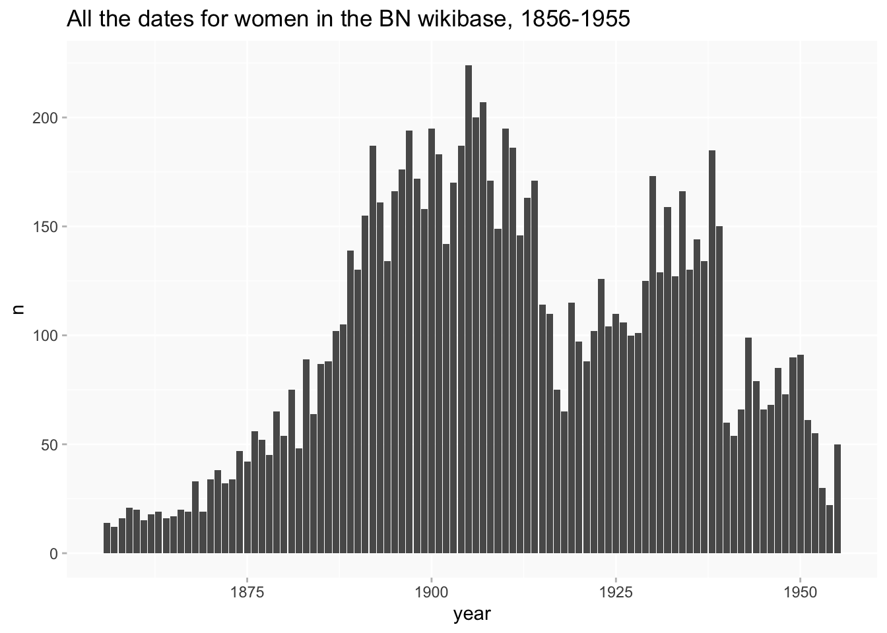
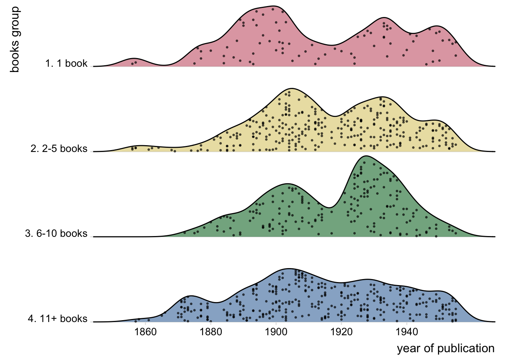
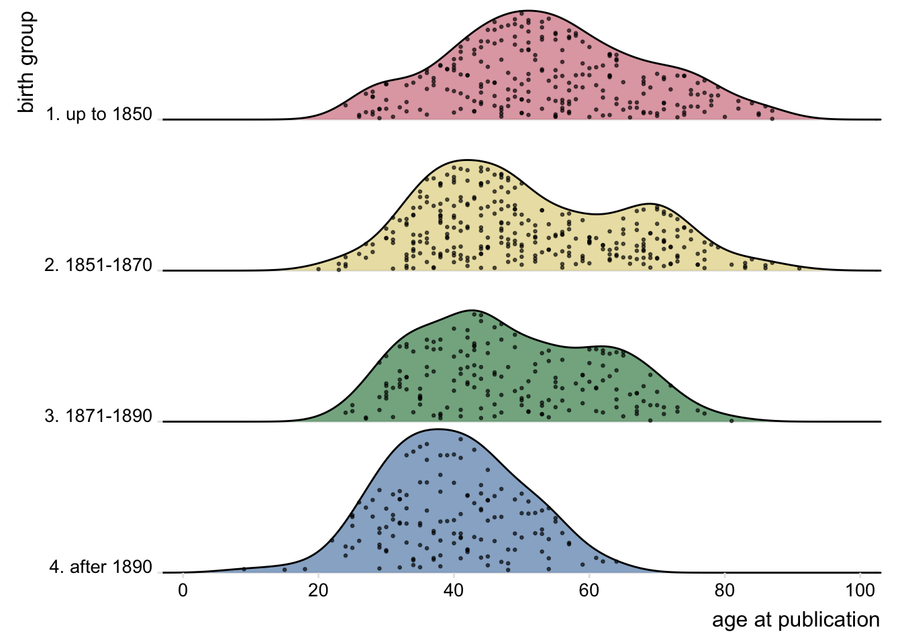
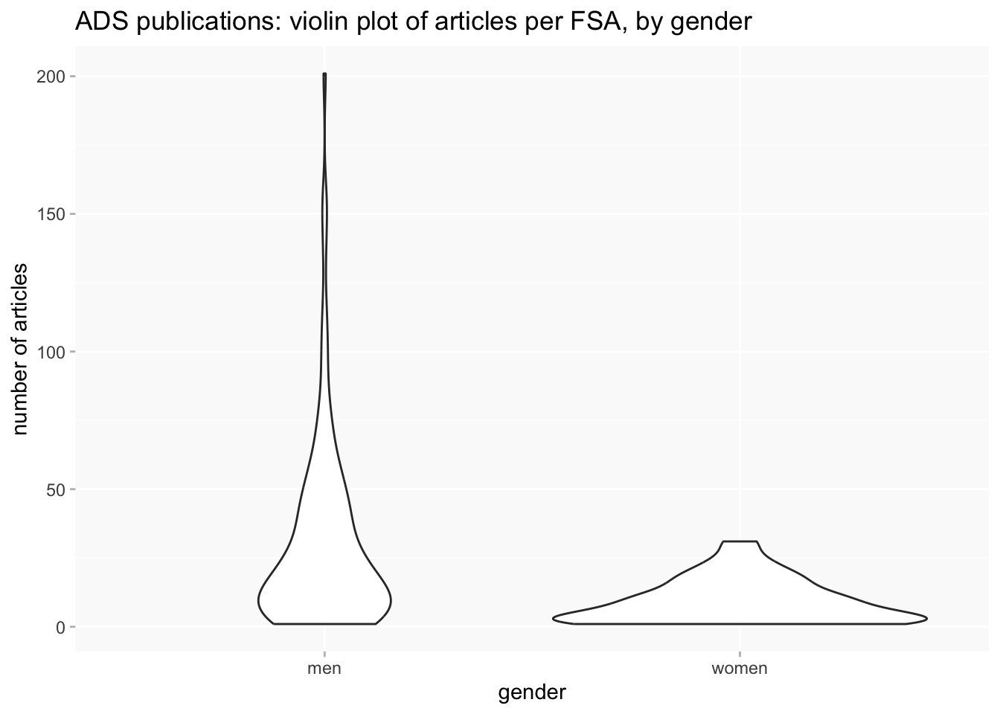
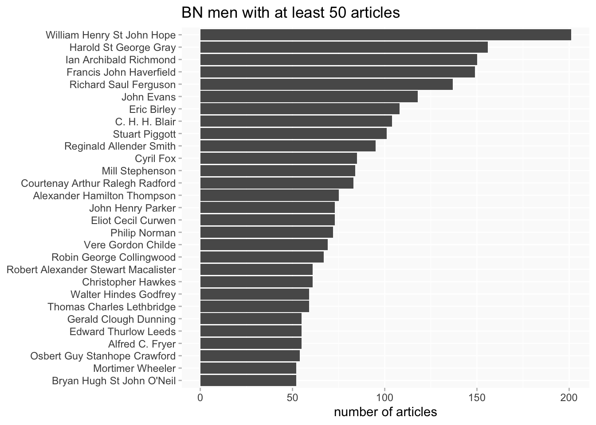
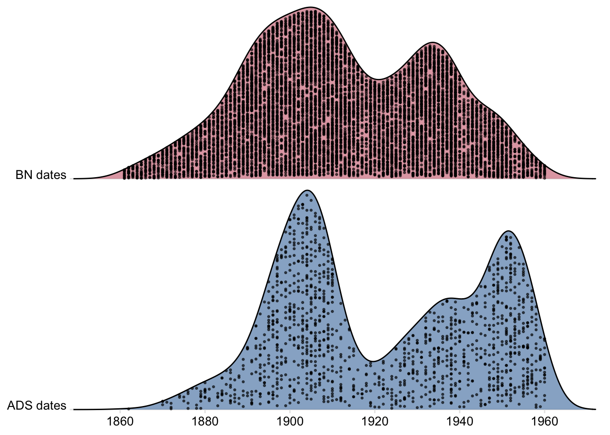
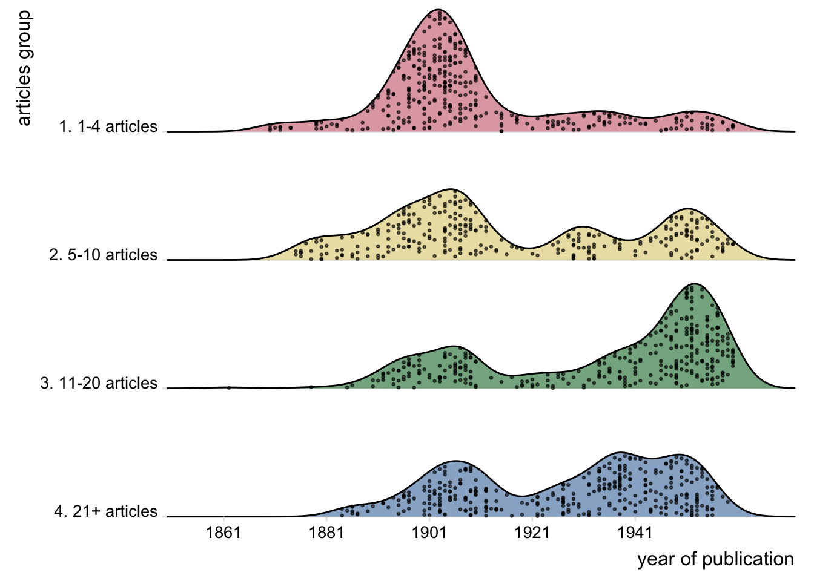
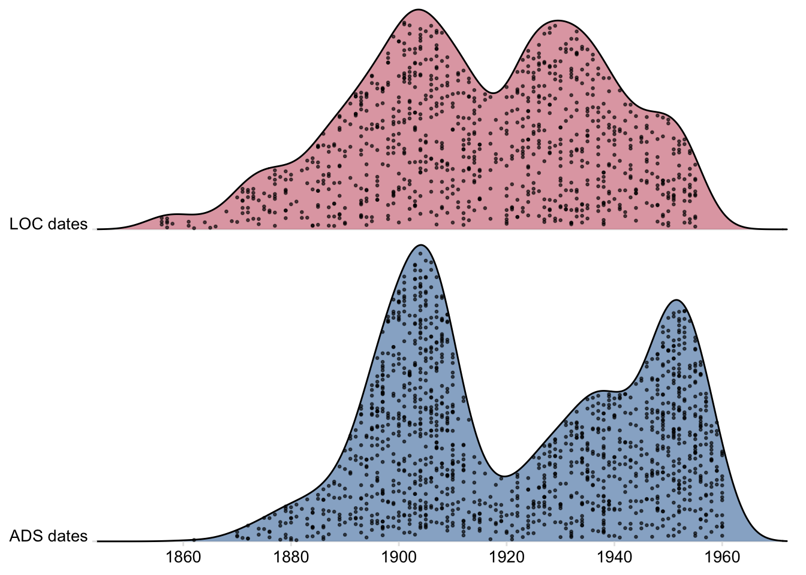

Publishing activity
ppa
publishing
Analysis of BN bibliographic data
Data
This analysis mainly uses data that is not currently included in the BN wikibase.
- Library of Congress (LOC) books data on zenodo
- Archaeology Data Service (ADS) articles data (to be added to the wikibase)
Library of Congress books
- filtered to 1856-1955 for a round century (drops about half a dozen books between 1843 and 1855)
- “role” data may be incomplete; the catalogue quite often records roles like editor, translator and so on but almost never explicitly states “author”, so I’ve made the assumption that if there’s no explicit role it’s an author… which may be dubious.
- reminders
- this data ended at 1955 so that we could focus on activity during the period covered by the project, and only included dated publications (there weren’t very many undated)
- where death date was known, we also removed publications more than 10 years after death
This slightly filtered set contains data about 223 women and 876 books.
numbers
Many women (80) published just one book. Having said that, the singletons are actually a lower proportion (35.9%) than in the ADS data below, and the 2-5 books group was the largest (99 women) (24 published 6-10 and 20 published 11 or more). The mean number of books per person is 4 and the median 2.
Who are the most prolific?
chronology
I’ve done this since the data is consistently available, but it’s very difficult to interpret. It largely reflects the dates in the database as a whole (provided for reference). That may suggest that the search strategy was effective at finding BN women in the catalogue. If so, it can’t simultaneously be used to say much about publishing trends.
For comparison:

The similarities between the two data sources are even more pronounced with a ridgeline plot (which shows proportions rather than numbers). The all-BN dates skew slightly more before 1920 and the LOC dates after that, but there’s not much in it.
On the other hand, it is more meaningful to compare dates for groups of women within the dataset; so for example, are there differences in chronology between women who publish only one book and those who publish larger numbers? Maybe not much, though the 2-5 books group have a bump 1900-20 and the 6-10 a bigger one 1920-40.

Or we can look at age profiles for publishing. (855 women have a year of birth; they’ve been split into four fairly balanced size groups.)
(But bear in mind that the last age group get cut off by the 1955 end date for pubs.)

collaboration
Collaboration between BN women seems very limited; only 11 books of 886 record the involvement of more than one BN woman (17 women in all). But this was a small proportion of collaborative works as a whole, so this is just to highlight the BN-BN connections.
In the broader picture of collaborative work, 132 women (59%) were involved in 294 books with multiple creators.
The picture here is quite complex; for example, being a solo editor/translator of a deceased author’s work(s) would hardly be the same kind of activity as co-authoring. I’d need to think about ways to tease out these differences and not sure I have time to do that now! (Especially as it would probably require some work cleaning up names.)
The most collaborative women
ADS journal articles
- covers 1861-1960 [with 544 undated articles in analysis not requiring dates; a few of these might be later than 1960]
- 6357 articles
- 320 women (in 1438 articles)
- 196 men (in 4973 articles)
I decided to try some comparison of women and men since we have ADS IDs for plenty of the men. For men I’m using the limited data available on ADS person profile pages (which gives article title and date but not journals or co-authors); it would take several hours to do a second run fetching the fuller articles data for men so I’ve only done that for women.
There have to be some caveats about exactly what’s being compared, given the differences between inclusion of women and men in the database; male FSAs are presumably overrepresented, for example.
numbers
First, the men published far more than women; this is probably not particularly surprising but the scale of the difference is striking. The 321 women in the data averaged 4.5 articles each, compared to 26.2 for the 196 men.
Second, there is a substantial difference in the distribution of publishing. 150 women published only one article (47% of the women), compared to only 23 men (12%). A violin plot captures the differences particularly nicely.
But… since it’s possible that a preponderance of male FSAs (people who might be expected to be prolific authors) is skewing the data somewhat, what happens if the comparison is restricted to male and female FSAs?
- 133 male and 62 female
- male FSAs have been identified by a) being proposers/signers for female FSAs; b) listed as FSAs in wikidata
The difference is still there though considerably less pronounced.

Who are the most prolific?

chronology
The chronological pattern has some similarities to that of dates overall and LOC dates, at least for women. I’ve left out the men here because I don’t think much can be read into their numbers at all; there’s an apparent post-WW1 bulge in their publications but I’m pretty certain this simply reflects the addition of large numbers of men for SAL elections after 1920.
There are other problems with dates. A lot of publications are undated, and the missing data may not be randomly distributed. Some journals definitely have more missing dates than others. I’ve tried to fill in some particularly big gaps for a few important journals (including Folklore, for which ADS claims to have no dates for 1910-1949!). (It’s theoretically feasible to date all journal articles as long as you have volume number (and most do), but frustratingly hard to get hold of this information in a readily usable form.)
Comparison of the shape of the ADS dates with all BN dates does show more difference than with the LOC books set. in each set for women: specifically, that growth after WW1 seems much slower and never really gets near to the early 20th-century peak (which I think is 1904 or 1905 [check] in both ADS and LOC).


Comparison of ADS articles with LOC books.

collaboration
First, where co-authors are both/all in the BN database, including men.
It’s again a small subset. Only 199 articles had multiple BN authors, with 104 people involved. Within these, the largest number of people involved in one publication was 5; the mean was 2.2 and the median 2.
Overall, men were more likely to appear as co-authors: 74 of 196 male authors (37.8%), compared to 30 women out of 320 (9.4%). Much of women’s BN co-authoring was with men rather than with other women.
| collab_authors | n_articles |
|---|---|
| men | 135 |
| men women | 54 |
| women | 10 |
On the other hand, this group of 30 women tended to be very collaborative. One third of all their articles were collaborative (33.8%) compared to less than a fifth of the men’s articles (17.7%).
Female BN-BN collaboration in ADS
Top male BN-BN collaborators
Turning to the fuller women’s data for multi-authored publications, 72 women (22.4%) were involved in 177 multi-author articles (12% of 1439 articles).
Top collaborators
Returning briefly to the most prolific women, how collaborative were they? It varies a lot.
journals
Which journals did women publish in most? Again with the more detailed ADS articles data for women only.
(I’ve done some work to standardise journals where there is a single series but the name could change over time.)
I think there might be interesting gendered differences in choices of journals (eg it looks possible that women published more than men in Folklore), but that can’t be tested without the full data.